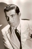

Country:United States, 80 minutes
Spoken languages:
Genres:Crime, Mystery
Director(s):Fred Zinnemann
Writer(s):Guy Trosper, Howard Emmett Rogers, Baynard Kendrick
Video Codec:Unknown
Number: 1747


Certification:NR
Storyline:
Blind detective Duncan Maclain gets mixed up with enemy agents and murder when he tries to help an old friend with a rebellious stepdaughter.
Cast: 

Medium: Original DVD,
Comments: Part of: Mystery Classics - 50 Movie Pack
Loaned: No
Aspect ratio: Unknown